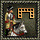

征服美洲大中華區遊戲平台
征服美洲大中華區遊戲平台
第四章 高级战术指导
4.2 编队与阵型

| 兵种 | 图标 | 名称 | 优缺点 |
| 步兵 | 横列编队 | 横列纵队标准的18世纪阵型，火枪兵使用可以使火力达到最大化，输出型阵型；缺点是移动缓慢且害怕侧翼或者后方被击溃。 |
|
| 密集编队 | 密集编队即普通方阵，是移动最有效率的阵型；由于过于集中，容易被偷袭，特别是移动中容易被击溃。 |
||
| 回型编队 | 回型编队又称拒马阵，可以阻拦骑兵，由于扎堆，对于近战系的围攻有一定的优势；该阵型惧怕火力集中。 |
| 兵种 | 图标 | 名称 | 优缺点 |
| 骑兵 | 横列编队 |
横列编队是普通纵队，和步兵类似，由于几乎所有国家的骑兵都有火枪，横列编队可以使火力达到最大化，利于稳线平推，属于进攻阵型。 |
|
| 密集编队 |
秘籍编队是进攻型阵型，骑兵会形成三角形的进攻阵型，一般用于对敌方侧翼和后方的突击，有进攻加成，近战效果最佳。 |
||
|  | 凹型编队 |
凹型编队属于防御性编队，骑兵不会站回字形，骑兵的阵型是后面开口的凹字形阵，保护骑手和军官，比横队的纵深更长，有防御加成。 |

| 编队类型 | 单位数量 | ||||||||||||||
| 步兵 | 15 | 36 | 72 | 120 | 196 | ||||||||||
| 骑兵 | 40 | 90 | 160 | ||||||||||||
| 欧洲国家的编队 | |||||||
| 步兵16C和步兵17C | 步兵18C | 骑兵17C | 骑兵18C | ||||
| 必要 | 可选 | 必要 | 可选 | 必要 | 可选 | 必要 | 可选 |
军官17C 鼓手17C |
执旗手17C | 军官18C 鼓手18C |
执旗手18C | 骑兵军官17C | 骑兵军官18C | 骑兵执旗手18C | |
| 美洲原住民国家的编队 | |||
| 步兵 | 骑兵 | ||
| 必要 | 可选 | 必要 | 可选 |
首领 祭司 |
骑兵首领 | ||
步兵编队：
| 阵型图示 | 阵型类型 | 标准加成 | 保持位置加成 |
| 横列编队 |  近战攻击力+2 近战攻击力+2 士气防御力+3 士气防御力+3 |
近战攻击力+9 士气防御力+9 |
|
| 密集编队 | |||
| 回型编队 |
骑兵编队：
| 阵型图示 | 阵型类型 | 编队人数 | 标准加成 | 保持位置加成 |
| 横列编队 | 40 | 士气防御力+1 |
近战攻击力+1 |
|
| 90 | 近战攻击力+2 士气防御力+3 |
近战攻击力+9 士气防御力+9 |
||
| 160 | 近战攻击力+2 士气防御力+3 |
近战攻击力+9 士气防御力+9 |
||
| 密集编队 | 40 | - | - | |
| 90 | - | - | ||
| 160 | 近战攻击力-10 士气防御力+9 |
近战攻击力+95 士气防御力-19 |
||
| 凹型编队 | 40 | - | - | |
| 90 | - | - | ||
| 160 | 近战攻击力+5 士气防御力-5 |
近战攻击力-27 士气防御力+80 |
| 图标 | 名称 | 快捷键 | 效果 |
| 补充人数 | F | 将附近的士兵添加到编队中来。 | |
| 解散编队 | V | 解散该编队。 | |
| 集合 | G | 集合编队。 | |
| 分散 | 分散编队。 | ||
| 横列阵型 | R | 摆横列阵列。（步兵） | |
| 横列阵型 | 摆横列阵列。（骑兵） | ||
| 密集阵型 | K | 摆密集阵列。（步兵） | |
| 密集阵型 | 摆密集阵列。（骑兵） | ||
| 回型阵型 | C | 摆回型阵列。（步兵） | |
| 凹型阵型 | 摆凹型阵列。（骑兵） |